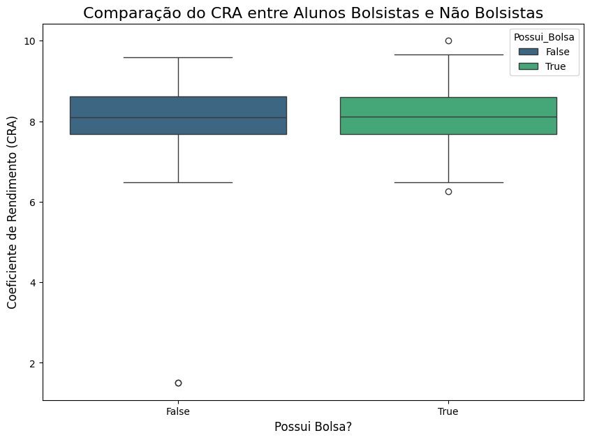
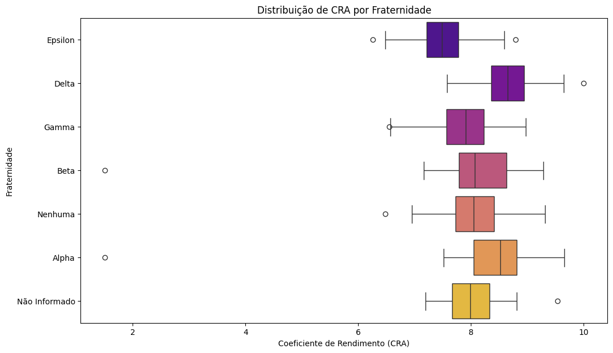

Hipóteses e testes#
Inferência estatística e formulação de hipóteses#
No dia anterior, exploramos dados para encontrar padrões com Data Mining. Hoje, vamos dar um passo adiante e aprender a usar amostras de dados para fazer afirmações sobre uma população inteira. Esse processo é chamado de inferência estatística. Muitas vezes, a mineração de dados nos ajuda a formular as perguntas que a inferência estatística irá responder formalmente.
A base da inferência é a formulação e o teste de hipóteses, que nos permitem tomar decisões baseadas em evidências estatísticas, e não apenas em intuição.
O que é Inferência Estatística?#
É o processo de usar dados de uma amostra para tirar conclusões (ou seja, “inferir”) sobre uma população maior da qual a amostra foi retirada.
População: O conjunto completo de todos os itens ou indivíduos de interesse. Ex: Todos os imóveis à venda em uma cidade.
Amostra: Um subconjunto da população que é selecionado para análise. Ex: 2.000 imóveis selecionados aleatoriamente dessa cidade.
Como raramente temos acesso a toda a população (por custo, tempo ou inviabilidade), trabalhamos com amostras para estimar características da população.
Hipóteses: Nula e Alternativa#
Para testar uma afirmação, formulamos duas hipóteses opostas:
Hipótese Nula (\(H_0\)): É a afirmação padrão, o status quo. Geralmente, ela propõe que não há efeito, não há diferença ou não há relação. Ex: “Não há diferença no preço médio dos imóveis com e sem garagem”.
Hipótese Alternativa (\(H_a\) ou \(H_1\)): É a afirmação que contradiz a hipótese nula. Ela propõe que há um efeito, há uma diferença ou há uma relação. Ex: “O preço médio dos imóveis com garagem é diferente do preço dos imóveis sem garagem”.
O objetivo de um teste de hipóteses é coletar evidências para rejeitar a hipótese nula em favor da hipótese alternativa.
Erros Tipo I e II#
Ao tomar uma decisão, corremos o risco de cometer dois tipos de erros:
Erro Tipo I (Falso Positivo): Rejeitar a hipótese nula (\(H_0\)) quando ela é, na verdade, verdadeira. (Ex: Concluir que há uma diferença de preço quando não há).
Erro Tipo II (Falso Negativo): Falhar em rejeitar a hipótese nula (\(H_0\)) quando ela é, na verdade, falsa. (Ex: Não encontrar uma diferença de preço que realmente existe).
p-valor e Intervalo de Confiança#
p-valor: É a probabilidade de observar os dados da nossa amostra (ou dados mais extremos) se a hipótese nula (\(H_0\)) for verdadeira.
Se o p-valor for baixo (geralmente < 0.05), consideramos a evidência contra \(H_0\) forte o suficiente para rejeitá-la.
Se o p-valor for alto (geralmente ≥ 0.05), não temos evidências suficientes para rejeitar \(H_0\). O número 0.05 é chamado de nível de significância e o valor 0.05 é apenas uma convenção. O nível de significância pode mudar dependendo do rigor do projeto ao definir a validade ou não da hipótese nula.
Intervalo de Confiança (IC): É uma faixa de valores onde temos um certo grau de confiança (ex: 95%) de que o verdadeiro parâmetro da população se encontra. Se o valor da hipótese nula (ex: diferença de zero) não estiver no intervalo, podemos rejeitá-la.
Mini quiz interativo#
Se queremos provar que um novo tratamento médico é eficaz, qual seria a Hipótese Nula (\(H_0\))?
Um p-valor de 0.03 nos leva a qual decisão sobre a \(H_0\)?
O que significa cometer um Erro Tipo II quando a hipótese nula é de que um alarme antigo é melhor que um novo?
Tipos de teste e quando usar#
A escolha do teste estatístico correto é crucial para a validade da sua análise. A decisão depende principalmente de:
O tipo de dados que você tem (numérico, categórico).
A pergunta que você quer responder (comparar médias, verificar associação).
As suposições que o teste exige.
Paramétrico vs. Não-paramétrico#
Testes Paramétricos: Exigem que os dados sigam certas premissas, como a distribuição normal e a homogeneidade de variâncias. São considerados mais “poderosos” (maior chance de detectar um efeito real) se as premissas forem atendidas.
Testes Não-paramétricos: Não exigem que os dados sigam uma distribuição específica. São mais robustos e podem ser usados quando as premissas dos testes paramétricos não são satisfeitas.
Premissas Essenciais dos Testes Paramétricos#
Para usar testes como o Teste t com confiança, precisamos checar duas condições principais nos nossos dados.
1. Distribuição Normal (Gaussiana)#
A distribuição dos dados deve se assemelhar a um “sino” (curva de Gauss), onde a maioria dos valores se concentra em torno da média.
Por que é importante? A matemática do Teste t usa a média e o desvio padrão para calcular a probabilidade (o p-valor) de uma diferença ter ocorrido ao acaso. Em uma distribuição normal, a média e o desvio padrão são descritores confiáveis do centro e da dispersão dos dados. Se a distribuição não é normal, esses descritores perdem a confiabilidade, e o resultado do teste pode ser inválido.
Como verificar a normalidade?
Visualmente: Com Histogramas ou Q-Q Plots (Quantile-Quantile plots). Um Q-Q plot mostra os quantis dos seus dados contra os quantis de uma distribuição normal teórica; se os pontos formam uma linha reta, é um bom sinal de normalidade.
Estatisticamente: Com testes de hipótese como o Teste de Shapiro-Wilk ou Kolmogorov-Smirnov. O teste de Shapiro-Wilk é geralmente mais recomendado para amostras menores.
2. Homogeneidade de Variâncias (Homocedasticidade)#
Ao comparar dois ou mais grupos, a variância (a medida de dispersão dos dados) de cada grupo deve ser aproximadamente a mesma.
Por que é importante? Se um grupo tem dados muito mais espalhados que o outro, comparar suas médias diretamente pode ser enganoso. O teste assume que os grupos são comparáveis não apenas em suas médias, mas também em sua dispersão.
Como verificar a homogeneidade de variâncias?
Estatisticamente: O Teste de Levene é o mais comum para verificar se dois ou mais grupos têm variâncias iguais.
Fluxograma de Decisão Aprimorado#
Para comparar a média de duas amostras independentes:
Teste de Normalidade (ex: Shapiro-Wilk) em ambos os grupos. Os dados são normalmente distribuídos?
Não: Use o Teste de Mann-Whitney U (não-paramétrico). FIM.
Sim: Prossiga para o passo 2.
Teste de Homogeneidade de Variâncias (ex: Teste de Levene). As variâncias são iguais?
Sim: Use o Teste t de Student (paramétrico padrão).
Não: Use o Teste t de Welch (variação do Teste t que não exige variâncias iguais).
Para verificar a associação entre duas variáveis categóricas:
Use o Teste Qui-quadrado.
Testes Abordados na Prática#
Teste t para amostras independentes: Compara as médias de dois grupos independentes para ver se são estatisticamente diferentes. (Subdividido em Teste t de Student e Welch com base na variância).
Teste t para amostras pareadas: Usado quando medições são feitas nos mesmos sujeitos em momentos diferentes (ex: o peso de 10 pessoas antes e depois de uma dieta) ou em pares relacionados (ex: o QI de irmãos).
Teste de Mann-Whitney U: Versão não-paramétrica do teste t para amostras independentes, compara as distribuições de dois grupos.
Teste de Wilcoxon signed-rank: Versão não-paramétrica do teste t para amostras pareadas.
Teste Qui-quadrado (\(\chi^2\)): Verifica se existe uma associação significativa entre duas variáveis categóricas.
ANOVA: Apenas como menção, é usada para comparar as médias de três ou mais grupos.
Teste de Kruskal-Wallis: Apenas como menção, é a vrsão análoga não-paramétrica da ANOVA.
Prática com testes no Python#
# Célula de Carga e Limpeza
import pandas as pd
import numpy as np
import seaborn as sns
import matplotlib.pyplot as plt
from scipy import stats
# 1. Carregar o dataset
df_universidade = pd.read_csv('dataset_universidade_ufad.csv')
# 2. Limpeza Rápida (essencial para os testes funcionarem)
# (Esta etapa reforça a importância do pré-processamento visto em aulas anteriores)
# 2.1 Padronizando 'Curso'
df_universidade['Curso'] = df_universidade['Curso'].str.lower().str.strip().replace({
'eng. de software': 'engenharia de software',
'computacao': 'ciência da computação',
'administracao': 'administração'
})
# 2.2 Corrigindo 'Horas_Atividade_Extra' (Exemplo, não usaremos neste teste)
mapa_texto_inverso = {'cinco': '5', 'oito': '8', 'dez': '10', 'doze': '12'}
df_universidade['Horas_Atividade_Extra'] = df_universidade['Horas_Atividade_Extra'].replace(mapa_texto_inverso)
df_universidade['Horas_Atividade_Extra'] = pd.to_numeric(df_universidade['Horas_Atividade_Extra'], errors='coerce')
df_universidade['Horas_Atividade_Extra'] = df_universidade['Horas_Atividade_Extra'].fillna(df_universidade['Horas_Atividade_Extra'].median())
# 2.3 Preenchendo NaNs em 'Fraternidade'
df_universidade['Fraternidade'] = df_universidade['Fraternidade'].fillna('Não Informado')
# Renomeando para 'df' para manter a consistência com o resto do notebook original
df = df_universidade
print("Dataset da UFAD carregado e limpo. Pronto para os testes.")
df.head()
---------------------------------------------------------------------------
FileNotFoundError Traceback (most recent call last)
Cell In[1], line 9
6 from scipy import stats
8 # 1. Carregar o dataset
----> 9 df_universidade = pd.read_csv('dataset_universidade_ufad.csv')
11 # 2. Limpeza Rápida (essencial para os testes funcionarem)
12 # (Esta etapa reforça a importância do pré-processamento visto em aulas anteriores)
13
14 # 2.1 Padronizando 'Curso'
15 df_universidade['Curso'] = df_universidade['Curso'].str.lower().str.strip().replace({
16 'eng. de software': 'engenharia de software',
17 'computacao': 'ciência da computação',
18 'administracao': 'administração'
19 })
File ~/work/minicurso-ciencia-de-dados/minicurso-ciencia-de-dados/venv/lib/python3.10/site-packages/pandas/io/parsers/readers.py:1026, in read_csv(filepath_or_buffer, sep, delimiter, header, names, index_col, usecols, dtype, engine, converters, true_values, false_values, skipinitialspace, skiprows, skipfooter, nrows, na_values, keep_default_na, na_filter, verbose, skip_blank_lines, parse_dates, infer_datetime_format, keep_date_col, date_parser, date_format, dayfirst, cache_dates, iterator, chunksize, compression, thousands, decimal, lineterminator, quotechar, quoting, doublequote, escapechar, comment, encoding, encoding_errors, dialect, on_bad_lines, delim_whitespace, low_memory, memory_map, float_precision, storage_options, dtype_backend)
1013 kwds_defaults = _refine_defaults_read(
1014 dialect,
1015 delimiter,
(...)
1022 dtype_backend=dtype_backend,
1023 )
1024 kwds.update(kwds_defaults)
-> 1026 return _read(filepath_or_buffer, kwds)
File ~/work/minicurso-ciencia-de-dados/minicurso-ciencia-de-dados/venv/lib/python3.10/site-packages/pandas/io/parsers/readers.py:620, in _read(filepath_or_buffer, kwds)
617 _validate_names(kwds.get("names", None))
619 # Create the parser.
--> 620 parser = TextFileReader(filepath_or_buffer, **kwds)
622 if chunksize or iterator:
623 return parser
File ~/work/minicurso-ciencia-de-dados/minicurso-ciencia-de-dados/venv/lib/python3.10/site-packages/pandas/io/parsers/readers.py:1620, in TextFileReader.__init__(self, f, engine, **kwds)
1617 self.options["has_index_names"] = kwds["has_index_names"]
1619 self.handles: IOHandles | None = None
-> 1620 self._engine = self._make_engine(f, self.engine)
File ~/work/minicurso-ciencia-de-dados/minicurso-ciencia-de-dados/venv/lib/python3.10/site-packages/pandas/io/parsers/readers.py:1880, in TextFileReader._make_engine(self, f, engine)
1878 if "b" not in mode:
1879 mode += "b"
-> 1880 self.handles = get_handle(
1881 f,
1882 mode,
1883 encoding=self.options.get("encoding", None),
1884 compression=self.options.get("compression", None),
1885 memory_map=self.options.get("memory_map", False),
1886 is_text=is_text,
1887 errors=self.options.get("encoding_errors", "strict"),
1888 storage_options=self.options.get("storage_options", None),
1889 )
1890 assert self.handles is not None
1891 f = self.handles.handle
File ~/work/minicurso-ciencia-de-dados/minicurso-ciencia-de-dados/venv/lib/python3.10/site-packages/pandas/io/common.py:873, in get_handle(path_or_buf, mode, encoding, compression, memory_map, is_text, errors, storage_options)
868 elif isinstance(handle, str):
869 # Check whether the filename is to be opened in binary mode.
870 # Binary mode does not support 'encoding' and 'newline'.
871 if ioargs.encoding and "b" not in ioargs.mode:
872 # Encoding
--> 873 handle = open(
874 handle,
875 ioargs.mode,
876 encoding=ioargs.encoding,
877 errors=errors,
878 newline="",
879 )
880 else:
881 # Binary mode
882 handle = open(handle, ioargs.mode)
FileNotFoundError: [Errno 2] No such file or directory: 'dataset_universidade_ufad.csv'
Prática 4 parte 1: Teste de Médias#
Situação: Uma imobiliária acredita que imóveis com garagem são, em média, mais caros que imóveis sem garagem. Pergunta: A diferença de preço entre imóveis com e sem garagem na nossa amostra é estatisticamente significativa?
\(H_0\): O preço médio de imóveis com garagem é igual ao preço médio dos sem garagem.
\(H_a\): O preço médio de imóveis com garagem é diferente do preço médio dos sem garagem.
Prática 4 parte 1: Teste de Médias com o dataset da UFAD#
Situação: A reitoria da UFAD quer saber se o programa de bolsas está associado a um desempenho acadêmico diferente. Pergunta: O Coeficiente de Rendimento Acadêmico (CRA) médio de alunos bolsistas é estatisticamente diferente do CRA médio de alunos não bolsistas?
\(H_0\): O CRA médio de alunos bolsistas é igual ao CRA médio dos não bolsistas.
\(H_a\): O CRA médio de alunos bolsistas é diferente do CRA médio dos não bolsistas.
# Célula de diagnóstico
print(df.columns)
Index(['ID_Aluno', 'Nome', 'Ano_Ingresso', 'Ano_Saida_Esperado',
'Periodo_Atual', 'Curso', 'Fraternidade', 'CRA', 'Possui_Bolsa',
'Taxa_Mensalidade', 'Horas_Atividade_Extra'],
dtype='object')
# --- Análise Visual ---
plt.figure(figsize=(10, 7))
sns.boxplot(data=df, x='Possui_Bolsa', y='CRA', hue='Possui_Bolsa', palette='viridis')
plt.title('Comparação do CRA entre Alunos Bolsistas e Não Bolsistas', fontsize=16)
plt.xlabel('Possui Bolsa?', fontsize=12)
plt.ylabel('Coeficiente de Rendimento (CRA)', fontsize=12)
plt.show()
# Separar as amostras para os testes
bolsistas = df[df['Possui_Bolsa'] == True]['CRA']
nao_bolsistas = df[df['Possui_Bolsa'] == False]['CRA']
alpha = 0.05
#---------------------------------------------------
# Teste 1: Teste t para amostras independentes (Paramétrico)
#---------------------------------------------------
print("--- Teste t (Comparação de Médias) ---")
# H0: As médias de CRA são iguais.
# Ha: As médias de CRA são diferentes.
t_stat, p_valor_t = stats.ttest_ind(bolsistas, nao_bolsistas)
print(f"Estatística t: {t_stat:.4f}")
print(f"P-valor do Teste t: {p_valor_t:.4f}")
if p_valor_t < alpha:
print("Resultado: Rejeitamos a hipótese nula (H0). A diferença nas MÉDIAS de CRA é estatisticamente significativa.\n")
else:
print("Resultado: Falhamos em rejeitar a hipótese nula (H0). Não há evidência de diferença significativa nas MÉDIAS de CRA.\n")
#-----------------------------------------------------------
# Teste 2: Teste de Mann-Whitney U (Não-Paramétrico) - TESTE BILATERAL (TWO-SIDED)
#-----------------------------------------------------------
print("--- Teste de Mann-Whitney U (Comparação de Distribuições) ---")
# H0: As distribuições de CRA são iguais para os dois grupos.
# Ha: As distribuições de CRA são DIFERENTES entre os dois grupos.
u_stat, p_valor_mw = stats.mannwhitneyu(bolsistas, nao_bolsistas, alternative='two-sided') # 'two-sided' é o padrão
print(f"Estatística U: {u_stat:.4f}")
print(f"P-valor do Teste de Mann-Whitney (Bilateral): {p_valor_mw:.4f}")
if p_valor_mw < alpha:
print("Resultado: Rejeitamos a hipótese nula (H0). Existe uma diferença estatisticamente significativa entre as DISTRIBUIÇÕES de CRA dos dois grupos.")
else:
print("Resultado: Falhamos em rejeitar a hipótese nula (H0). Não há evidência de uma diferença significativa entre as DISTRIBUIÇÕES de CRA dos dois grupos.")

--- Teste t (Comparação de Médias) ---
Estatística t: 0.3543
P-valor do Teste t: 0.7233
Resultado: Falhamos em rejeitar a hipótese nula (H0). Não há evidência de diferença significativa nas MÉDIAS de CRA.
--- Teste de Mann-Whitney U (Comparação de Distribuições) ---
Estatística U: 30590.5000
P-valor do Teste de Mann-Whitney (Bilateral): 0.7955
Resultado: Falhamos em rejeitar a hipótese nula (H0). Não há evidência de uma diferença significativa entre as DISTRIBUIÇÕES de CRA dos dois grupos.
Prática 4 parte 2: Associação entre variáveis categóricas na UFAD#
Situação: Um grupo de pesquisa estudantil quer saber se alunos de fraternidades têm uma proporção diferente de bolsas de estudo em comparação com alunos que não participam de fraternidades. Pergunta: Existe uma associação entre participar de uma fraternidade e possuir bolsa de estudos?
\(H_0\): Não há associação entre a Fraternidade e Possuir Bolsa (as variáveis são independentes).
\(H_a\): Existe uma associação entre a Fraternidade e Possuir Bolsa.
# Aplicação do teste Qui-quadrado
# 1. Criar a tabela de contingência
tabela_contingencia = pd.crosstab(df['Fraternidade'], df['Possui_Bolsa'])
print("Tabela de Contingência:")
print(tabela_contingencia)
# 2. Realizar o teste Qui-quadrado
chi2, p_valor_chi, dof, expected = stats.chi2_contingency(tabela_contingencia)
print(f"\nEstatística Qui-quadrado: {chi2:.4f}")
print(f"P-valor do Teste Qui-quadrado: {p_valor_chi:.4f}")
print(f"Graus de Liberdade (dof): {dof}")
# Interpretação
alpha = 0.05
if p_valor_chi < alpha:
print("\nRejeitamos a hipótese nula (H0). Existe uma associação estatisticamente significativa entre as variáveis.")
else:
print("\nFalhamos em rejeitar a hipótese nula (H0). Não há evidência de associação entre as variáveis.")
Tabela de Contingência:
Possui_Bolsa False True
Fraternidade
Alpha 40 39
Beta 42 29
Delta 48 33
Epsilon 33 40
Gamma 44 34
Nenhuma 50 43
Não Informado 15 10
Estatística Qui-quadrado: 4.8162
P-valor do Teste Qui-quadrado: 0.5676
Graus de Liberdade (dof): 6
Falhamos em rejeitar a hipótese nula (H0). Não há evidência de associação entre as variáveis.
Exemplo Bônus: Teste de Médias com Mais de Dois Grupos (ANOVA)#
Situação: A reitoria agora quer saber se o desempenho acadêmico varia entre as diferentes fraternidades. Como temos mais de dois grupos (Alpha, Beta, Gamma, etc.), o Teste t não é adequado. Usaremos a ANOVA. Pergunta: O CRA médio dos alunos difere entre as diferentes fraternidades?
\(H_0\): As médias de CRA são iguais para todas as fraternidades.
\(H_a\): Pelo menos uma das fraternidades tem uma média de CRA diferente das outras.
# 1. Visualização com Boxplot
plt.figure(figsize=(12, 7))
sns.boxplot(data=df, x='CRA', y='Fraternidade', palette='plasma')
plt.title('Distribuição de CRA por Fraternidade')
plt.xlabel('Coeficiente de Rendimento (CRA)')
plt.ylabel('Fraternidade')
plt.show()
# 2. Preparando os dados para o teste ANOVA
# A função f_oneway espera cada grupo como um argumento separado
grupos_fraternidade = df['Fraternidade'].unique()
amostras = [df[df['Fraternidade'] == grupo]['CRA'] for grupo in grupos_fraternidade]
# 3. Realizando o Teste ANOVA
f_stat, p_valor_anova = stats.f_oneway(*amostras)
print(f"Estatística F: {f_stat:.4f}")
print(f"P-valor da ANOVA: {p_valor_anova:.10f}")
# Interpretação
if p_valor_anova < alpha:
print("\nRejeitamos a Hipótese Nula (H0).")
print("Existe uma diferença estatisticamente significativa entre as médias de CRA de pelo menos duas fraternidades.")
else:
print("\nFalhamos em Rejeitar a Hipótese Nula (H0).")
print("Não há evidências de uma diferença significativa entre as médias de CRA das fraternidades.")
/tmp/ipython-input-29-4246962578.py:3: FutureWarning:
Passing `palette` without assigning `hue` is deprecated and will be removed in v0.14.0. Assign the `y` variable to `hue` and set `legend=False` for the same effect.
sns.boxplot(data=df, x='CRA', y='Fraternidade', palette='plasma')

Estatística F: 23.7622
P-valor da ANOVA: 0.0000000000
Rejeitamos a Hipótese Nula (H0).
Existe uma diferença estatisticamente significativa entre as médias de CRA de pelo menos duas fraternidades.
Quiz do Conteúdo#
Questões#
Responda às seguintes perguntas com base em seus conhecimentos de estatística aplicada à ciência de dados. As respostas explicadas estarão no fim do questionário
1. Teste de Botão em E-commerce Uma empresa de e-commerce quer testar se um novo design de botão de “comprar” (versão B) aumenta a taxa de cliques em comparação com o design atual (versão A). Qual é a hipótese nula (\(H_0\)) correta para este teste A/B?
a) A taxa de cliques do botão B é maior que a do botão A.
b) A taxa de cliques do botão B é diferente da do botão A.
c) Não há diferença na taxa de cliques entre o botão A e o botão B.
d) O novo design do botão B é visualmente mais atraente.
2. Interpretando o P-valor Ao analisar os resultados do teste A/B do botão, um cientista de dados encontra um p-valor de \(0,03\). Se o nível de significância (\(\alpha\)) foi definido em \(0,05\), qual é a conclusão correta?
a) Rejeitar a hipótese nula, concluindo que o novo botão tem uma taxa de cliques significativamente diferente.
b) Aceitar a hipótese nula, concluindo que não há diferença entre os botões.
c) Aumentar o tamanho da amostra, pois o resultado não é conclusivo.
d) O teste falhou, pois o p-valor deveria ser exatamente 0,05.
3. Comparando o Uso do App Uma equipe de produto acredita que os usuários de Android passam mais tempo no aplicativo do que os usuários de iOS. Eles coletam dados de 1.000 usuários de cada plataforma. Qual teste estatístico seria mais apropriado para verificar essa hipótese?
a) Teste Qui-quadrado de independência.
b) Teste t de duas amostras independentes.
c) Regressão Linear.
d) Análise de Variância (ANOVA).
4. Erros em Estudos Clínicos Em um estudo clínico para testar um novo medicamento, a hipótese nula (\(H_0\)) é definida como: “A eficácia do novo medicamento é igual à do placebo”. Nesse contexto, o que significaria cometer um erro do Tipo I (falso positivo)?
a) Concluir que o medicamento não tem efeito, quando na verdade ele tem.
b) Concluir que o medicamento tem um efeito superior ao placebo, quando na verdade não tem.
c) Concluir que o placebo é mais eficaz que o medicamento.
d) Utilizar o teste estatístico errado para analisar os dados.
5. Análise em Redes Sociais Uma rede social quer saber se a proporção de usuários que postam fotos é a mesma entre adolescentes e adultos. Qual teste é o mais indicado para comparar essas duas proporções?
a) Teste t pareado.
b) Teste Z para duas proporções.
c) Correlação de Pearson.
d) Teste de Kolmogorov-Smirnov.
6. O Problema dos Testes Múltiplos Um analista de marketing realiza 20 testes A/B em um site, cada um com um nível de significância \(\alpha = 0,05\). Qual é a probabilidade de ele cometer pelo menos um erro do Tipo I (obter um falso positivo) em algum desses 20 testes, assumindo que nenhuma das mudanças tem efeito real?
a) Exatamente 5%.
b) Impossível de calcular sem mais dados.
c) Cerca de 64%.
d) 100%, pois \(20 \times 0,05 = 1\).
7. Otimização de Rotas Logísticas Uma empresa de logística implementou uma nova rota e quer provar que o tempo médio de entrega diminuiu. A média anterior era de 45 minutos. Após a mudança, uma amostra de 50 entregas mostrou uma média de 42 minutos. Qual é a hipótese alternativa (\(H_a\)) correta para este cenário?
a) A nova média de tempo de entrega é igual a 45 minutos. (\(\mu = 45\))
b) A nova média de tempo de entrega é diferente de 45 minutos. (\(\mu \ne 45\))
c) A nova média de tempo de entrega é menor que 45 minutos. (\(\mu < 45\))
d) A nova média de tempo de entrega é maior que 42 minutos. (\(\mu > 42\))
8. Conceito de Poder Estatístico O que significa o “poder estatístico” de um teste?
a) A probabilidade de rejeitar corretamente uma hipótese nula falsa.
b) A probabilidade de que a hipótese nula seja verdadeira.
c) O tamanho do efeito observado no estudo.
d) A probabilidade de cometer um erro do Tipo I.
9. Associação entre Variáveis Categóricas Uma pesquisa quer verificar se existe associação entre o nível de escolaridade (fundamental, médio, superior) e a preferência por uma plataforma de streaming (A, B ou C). Qual teste estatístico é o mais adequado?
a) Análise de Variância (ANOVA).
b) Teste t de amostras independentes.
c) Teste Qui-quadrado de independência.
d) Regressão Logística.
10. Interpretando um P-valor Alto Um cientista de dados realiza um teste de hipótese e obtém um p-valor de \(0,25\). Qual das seguintes é a interpretação mais correta desse resultado?
a) Há uma probabilidade de 25% de que a hipótese nula seja verdadeira.
b) Há uma probabilidade de 25% de que os resultados observados ocorreram por acaso, se a hipótese nula for verdadeira.
c) O resultado é estatisticamente significativo e a hipótese nula deve ser rejeitada.
d) A hipótese alternativa é definitivamente falsa.
Respostas#
1. Alternativa correta: c)
Razão: A hipótese nula (\(H_0\)) é sempre a afirmação de “status quo” ou ausência de efeito. Ela postula que qualquer diferença observada entre os grupos (neste caso, as taxas de clique dos botões A e B) é meramente fruto do acaso. O objetivo do teste estatístico é determinar se há evidências suficientes para rejeitar essa afirmação.
2. Alternativa correta: a)
Razão: A regra de decisão em um teste de hipóteses é comparar o p-valor com o nível de significância (\(\alpha\)). Se o p-valor < \(\alpha\), rejeitamos a hipótese nula. Como \(0,03 < 0,05\), temos evidências estatisticamente significativas para concluir que o novo design do botão causou uma mudança na taxa de cliques.
3. Alternativa correta: b)
Razão: O problema consiste em comparar a média de uma variável contínua (“tempo no aplicativo”) entre dois grupos independentes (“usuários de Android” e “usuários de iOS”). O teste t de duas amostras independentes é a ferramenta estatística padrão para este cenário.
4. Alternativa correta: b)
Razão: Um erro do Tipo I ocorre quando rejeitamos uma hipótese nula que, na verdade, é verdadeira. A hipótese nula (\(H_0\)) afirma que o medicamento não é mais eficaz que o placebo. Rejeitar \(H_0\) significa concluir que ele tem efeito. Se \(H_0\) for verdadeira, essa conclusão é um erro – um “falso positivo”.
5. Alternativa correta: b)
Razão: O objetivo é comparar a proporção de uma característica (postar fotos) entre duas populações independentes (adolescentes e adultos). O Teste Z para duas proporções é o método estatístico projetado exatamente para essa finalidade.
6. Alternativa correta: c)
Razão: Este é um problema de comparações múltiplas. A probabilidade de não cometer um erro do Tipo I em um único teste é de \(1 - 0,05 = 0,95\). A probabilidade de isso acontecer em 20 testes independentes é \(0,95^{20} \approx 0,358\). Portanto, a probabilidade de cometer pelo menos um erro do Tipo I é \(1 - 0,358 = 0,642\), ou cerca de 64%.
7. Alternativa correta: c)
Razão: A hipótese alternativa (\(H_a\) ou \(H_1\)) representa a alegação que o pesquisador quer provar. A empresa quer demonstrar que o tempo de entrega diminuiu em relação à média anterior de 45 minutos. Isso corresponde a uma hipótese unilateral (direcional), expressa como \(\mu < 45\).
8. Alternativa correta: a)
Razão: O poder estatístico é a capacidade de um teste detectar um efeito quando ele realmente existe. Matematicamente, é a probabilidade de rejeitar corretamente uma hipótese nula falsa. Um teste com alto poder tem baixa chance de cometer um erro do Tipo II (um “falso negativo”).
9. Alternativa correta: c)
Razão: Estamos analisando a relação entre duas variáveis categóricas: “nível de escolaridade” (com três categorias) e “preferência de plataforma” (com três categorias). O Teste Qui-quadrado de independência é usado para determinar se existe uma associação estatisticamente significativa entre essas variáveis.
10. Alternativa correta: b)
Razão: O p-valor é a probabilidade de obter os dados observados (ou dados ainda mais extremos), assumindo que a hipótese nula é verdadeira. Um p-valor alto, como 0,25, significa que os dados não são surpreendentes sob a \(H_0\) e, portanto, não temos evidências para rejeitá-la. Ele não mede a probabilidade de a \(H_0\) ser verdadeira.